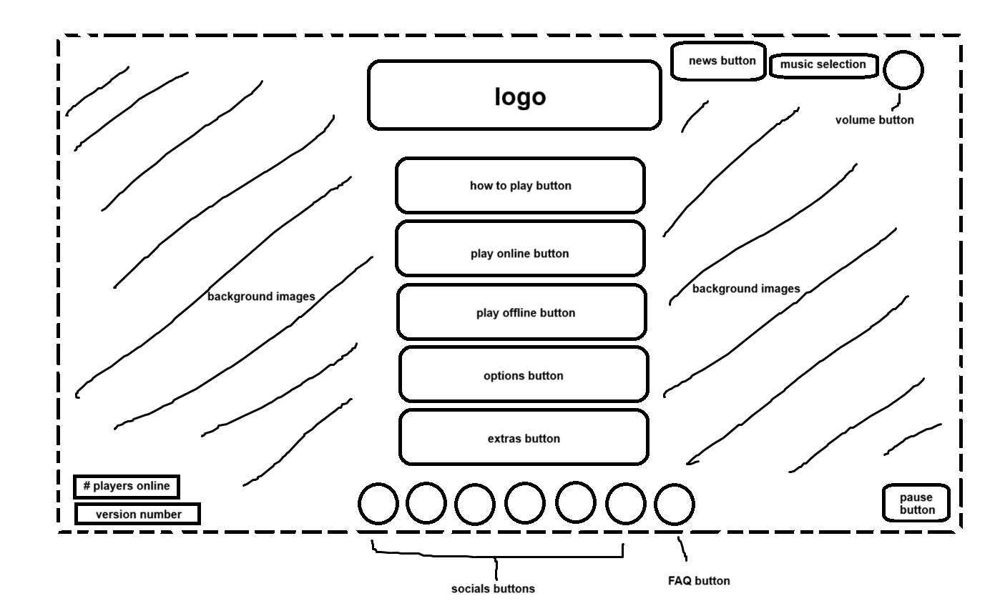
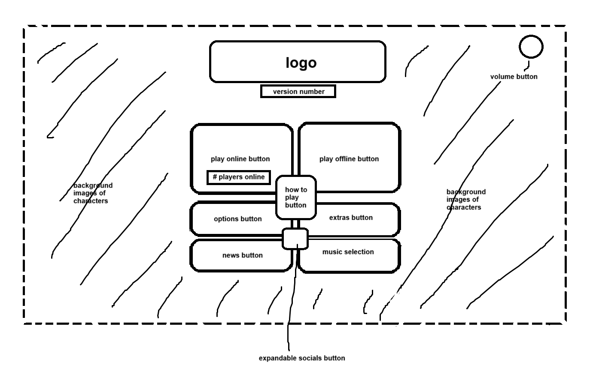

-
Using the favorite website you chose in homework 1, create a wireframe for one page of it using pen/paper, PowerPoint, or any your tool of choice. (use the 'img' tag!) Make sure to let us know what the name of your website is (Use the 'p' tag!)
toughlovearena.com
 -
Try to improve the website you've chosen, and create a redesigned wireframe of one page for the same website using the principles of visual hierarchy that you learned from the article.
redesigned toughlovearena.com

-
What is the goal of the website? Who is it intended for? How does the design accomplish this? Write 2-3 sentences answering these questions. (Use the 'p' tag again!)
The goal of the website is to offer a free to play, easy to learn fighting game through a web browser so no download is needed. It is intended for casual online gamers or people interested in learning a fighting game. The design accomplishes this by offering very visible and easy to access tutorials and information pages, as well as one click access to the online play function, or offline play to practice on your own.
-
Write 2-3 sentences about what problems your redesign addressed, and how it solved them.
My redesign tried to address how boring and static the page looked, to increase engagement, and I did this by reformatting and allwoing everything to be more easily accessed and seen in the middle of the screen. I also tried to lessen the number of buttons so that it would be less overwhelming.
NOTE: Make sure to include the wireframe images in the website and don't just put it in your assets folder!
Your wireframes should look something like this: